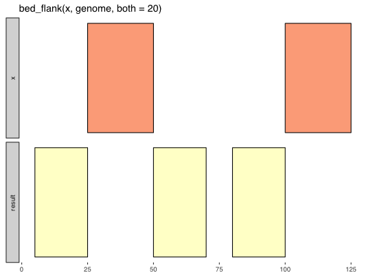

Create flanking intervals from input intervals.
bed_flank(x, genome, both = 0, left = 0, right = 0, fraction = FALSE, strand = FALSE, trim = FALSE, ...)
| x | |
|---|---|
| genome | |
| both | number of bases on both sizes |
| left | number of bases on left side |
| right | number of bases on right side |
| fraction | define flanks based on fraction of interval length |
| strand | define |
| trim | adjust coordinates for out-of-bounds intervals |
| ... | extra arguments (not used) |
http://bedtools.readthedocs.org/en/latest/content/tools/flank.html
Other single set operations: bed_cluster,
bed_complement, bed_merge,
bed_shift, bed_slop
x <- trbl_interval( ~chrom, ~start, ~end, 'chr1', 25, 50, 'chr1', 100, 125 ) genome <- trbl_genome( ~chrom, ~size, 'chr1', 130 ) bed_glyph(bed_flank(x, genome, both = 20))x <- trbl_interval( ~chrom, ~start, ~end, ~name, ~score, ~strand, "chr1", 500, 1000, '.', '.', '+', "chr1", 1000, 1500, '.', '.', '-' ) genome <- trbl_genome( ~chrom, ~size, "chr1", 5000 ) bed_flank(x, genome, left = 100)#> # A tibble: 2 x 6 #> chrom start end name score strand #> <chr> <int> <int> <chr> <chr> <chr> #> 1 chr1 400 500 . . + #> 2 chr1 900 1000 . . -bed_flank(x, genome, right = 100)#> # A tibble: 2 x 6 #> chrom start end name score strand #> <chr> <int> <int> <chr> <chr> <chr> #> 1 chr1 1000 1100 . . + #> 2 chr1 1500 1600 . . -bed_flank(x, genome, both = 100)#> # A tibble: 4 x 6 #> chrom start end name score strand #> <chr> <int> <int> <chr> <chr> <chr> #> 1 chr1 400 500 . . + #> 2 chr1 900 1000 . . - #> 3 chr1 1000 1100 . . + #> 4 chr1 1500 1600 . . -bed_flank(x, genome, both = 0.5, fraction = TRUE)#> # A tibble: 4 x 6 #> chrom start end name score strand #> <chr> <int> <int> <chr> <chr> <chr> #> 1 chr1 250 500 . . + #> 2 chr1 750 1000 . . - #> 3 chr1 1000 1250 . . + #> 4 chr1 1500 1750 . . -